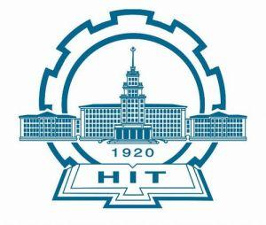

Education Background
 2013-Present Ph.D. in Autonomation
Shanghai Jiao Tong University (SJTU)
2013-Present Ph.D. in Autonomation
Shanghai Jiao Tong University (SJTU)
Supervisor: Prof. Ming Yang
Research Direction: Autonomous Vehicles

2009-2013 B.E. in Autonomation
Harbin Institute of Technology (HIT)
Supervisor: Prof. Guangren Duan
Research Direction: Control Theory